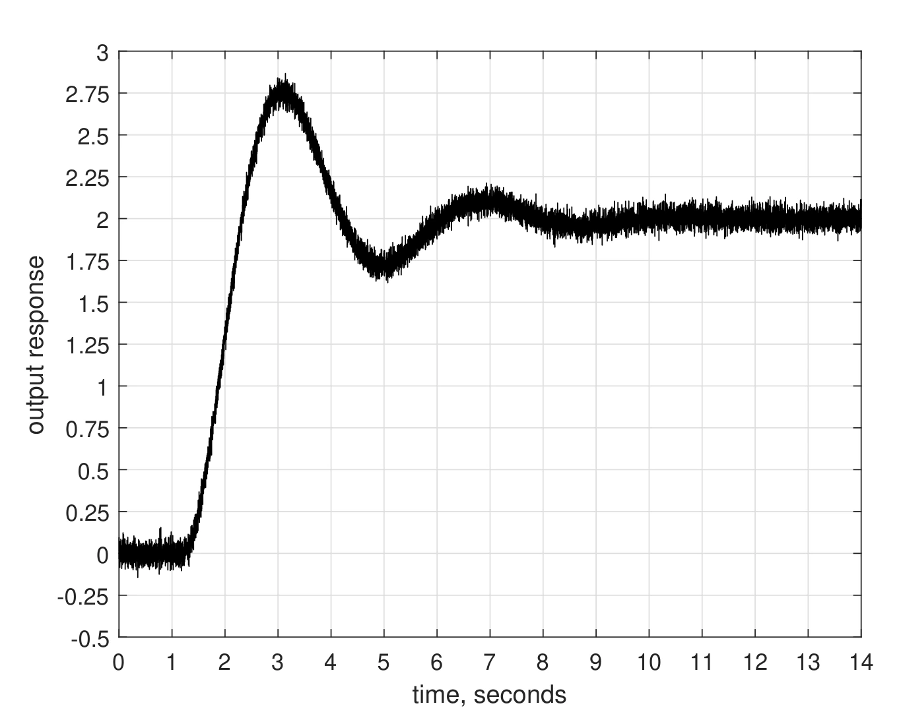
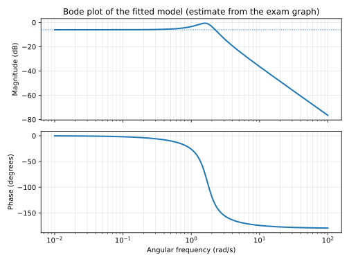
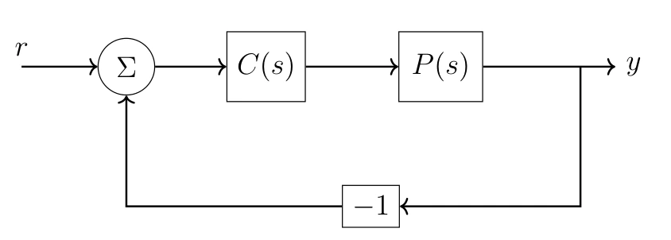
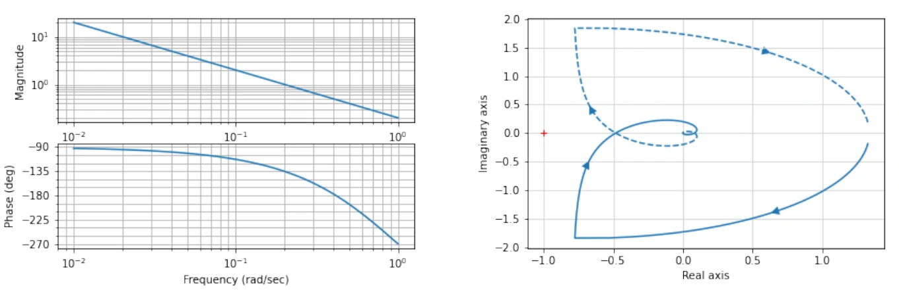
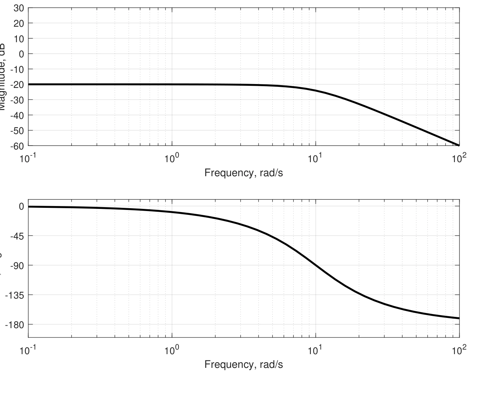
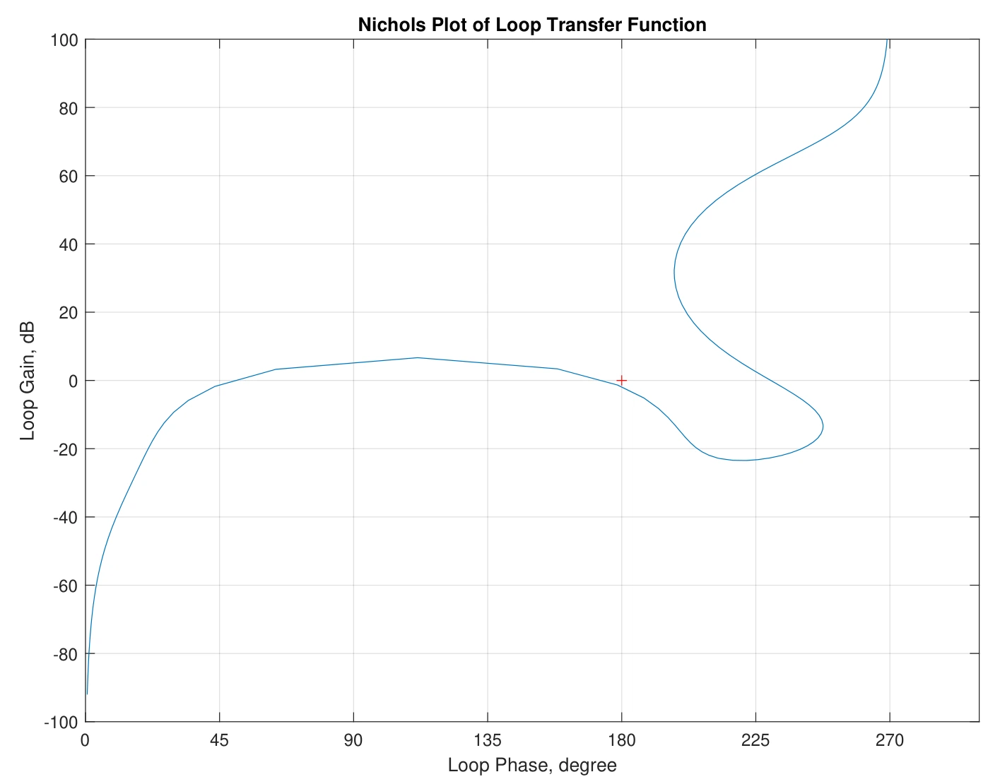

Source: AE511_Final_Exam.pdf (14 pages; four required problems and one extra-credit problem). The final specifies methods covered in class; this guide uses classical transfer functions, Bode/Nyquist/Nichols arguments, algebra, and worked frequency calculations, not black-box auto-tuning. Numerical fits to plotted data are labeled as estimates.
Problem 1 — Identify a transfer function from a noisy step response
Problem 1 (10 points)
Consider the step response shown below. A step of magnitude 4 is applied at 1.2 seconds.

- Using only the step response, estimate the transfer function.
- What are the zeros of the system?
- What are the poles of the system?
- Is the system stable? What characteristics of the poles/zeros can help us determine this?
- Is the transfer function proper, strictly proper, or improper?
- Draw a Bode plot for the transfer function identified from the time response.
Use the actual step amplitude and delayed start time. Derive K, ζ, ωn from steady response, peak ratio and peak timing.
Worked solution — answered by question part
Part (1) — Estimate a transfer function from the step plot
The supplied graph shows a 4-unit step applied at \(t_0=1.2\) s, output steady near \(2\), a first peak near \(2.75\)–\(2.8\) around \(t=3.0\)–\(3.2\) s, and decaying oscillations. The steady-state theorem gives the static gain
Estimate peak overshoot \(M_p\approx(2.8-2.0)/2.0=0.40\). For a standard underdamped second-order system,
The peak occurs about \(t_p\approx3.1-1.2=1.9\) s after the input step, so the damped natural frequency is \(\omega_d\approx\pi/t_p\approx1.65\) rad/s, and
An estimated strictly proper zero-free second-order transfer function is then
Part (2) — Identify the zeros of the estimated model
Answer: The fitted model has a constant numerator, so it has no finite zeros. A single noisy step response cannot prove that the physical plant has no other zeros; this is a modeling assumption.
Part (3) — Identify the poles
They are a complex-conjugate, lightly damped pair derived from the decay and peak-time estimates in Part (1).
Part (4) — Decide whether the model is stable
Answer: Yes, the estimated rational model is BIBO stable: both poles have strictly negative real part. The observed decay of the oscillations supports this. Zeros do not by themselves establish stability.
Part (5) — Classify the transfer function by properness
Answer: Strictly proper. The fitted numerator degree is zero and the denominator degree is two, so the transfer function approaches zero as \(|s|\to\infty\).
Part (6) — Construct its approximate Bode magnitude and phase
From the estimated two-pole model, the low-frequency magnitude is \(20\log_{10}(0.5)\approx-6.02\,\mathrm{dB}\); resonance occurs near \(\omega_r=\omega_n\sqrt{1-2\zeta^2}\approx1.58\,\mathrm{rad/s}\). The high-frequency slope is −40 dB/decade. Phase begins near 0°, passes −90° at about \(\omega_n\), and approaches −180°.
The graph-based model is approximate; plot \(G_{\rm est}(j\omega)\) to obtain a precise curve for that estimate.

Self-check: Are the step time and amplitude removed before fitting poles?
Problem 2 — Nyquist stability range for an integrator and RHP zeros
Problem 2 (10 points)

Consider the feedback control diagram above with \(P(s)=\frac{1}{5}\frac{(s-1)^2}{s(s+1)^2}\) and \(C(s)=k_p\). The Bode and the Nyquist plot for \(P(s)\) are given below.

- Use the Nyquist criteria to determine the range of \(k_p\) so that the system is stable.
- Determine the gain crossover frequency and the phase margin when \(k_p=\frac14\).
Handle the pole at the origin in Nyquist, check gain interval with the characteristic equation, and compute the specified crossover.
Worked solution — answered by question part
Part (a) — Nyquist stability range for proportional gain
The printed loop is unity negative feedback with proportional \(C(s)=k_p\) and
Note the two RHP zeros at \(+1\), but no RHP poles; the plant also has a pole at the origin, so a Nyquist contour must indent around \(s=0\). To find the exact stability interval, form the classical closed-loop characteristic polynomial
Normalize by 5 if desired and apply the cubic Routh conditions. With positive \(k_p\), positivity demands \(5-2k_p>0\), and the nontrivial determinant is
The positive root is \(-5+5\sqrt2\approx2.0711\); together with \(k_p>0\), the stable region is
At \(k_p=0\), the loop is not asymptotically stable because an integrator pole remains. For \(k_p<0\), the characteristic constant term is negative and the system has an RHP root. The supplied Nyquist plot must give the same interval when gain scales the curve relative to \(-1\); the Routh calculation is an independent verification, not an alternative black-box design tool.
Part (b) — Gain crossover and phase margin for kₚ = 1/4
For the specified \(k_p=1/4\), the magnitude simplifies unexpectedly:
Thus \(|k_pP(j\omega_c)|=1\) implies \(\omega_c=k_p/5=\boxed{0.050\ \mathrm{rad/s}}\). For \(\omega>0\), the continuously unwrapped phase is
At \(\omega_c=0.05\), phase is approximately \(-101.45^\circ\), hence
The RHP zeros make phase more negative than a minimum-phase magnitude twin: do not infer phase margin solely from the \(-20\) dB/decade magnitude slope.
Self-check: Does the stability range exclude marginal endpoints?
Problem 3 — Attenuate a reentry-vehicle sideslip oscillation
Problem 3 (10 points)
Simulations show that a reentry vehicle should experience a sustained \(20^\circ\) oscillation in side slip at frequency \(\omega_f\) at high Mach numbers. The guidance and control lead asks you if the amplitude of the oscillation can be decreased by using the rudder control surface.
- Draw a block diagram showing the disturbance oscillation, the plant, and the controller. Consider the plant to be \(G(s)=\beta/\delta_r\), where \(\beta\) is the side slip angle of the reentry vehicle, and \(\delta_r\) is the deflection of the rudder.
- Identify the closed-loop transfer function that you would use to investigate the ability of the control system to attenuate the oscillation. Make sure you specify the elements of the closed-loop transfer function.
- Draw the magnitude of the Bode plot of the closed-loop transfer function that would achieve a decrease in the amplitude of the oscillation by a factor of 10. It is desired that the control system not affect rigid body motions (roll/pitch/yaw) at frequencies \(\omega<\frac{1}{10}\cdot\omega_f\).
- What requirement would this last step place on the loop transfer function?
Model the oscillation as an OUTPUT disturbance and express the tenfold target with sensitivity at the mode frequency.
Worked solution — answered by question part
Part (1) — Draw the disturbance-rejection feedback diagram
The plant is explicitly defined as \(G(s)=\beta(s)/\delta_r(s)\), where rudder deflection \(\delta_r\) is the input and sideslip angle \(\beta\) the output. Model the sustained \(20^\circ\) oscillation as an additive output disturbance \(d(s)\) at frequency \(\omega_f\), and use negative feedback \(C(s)\) from measured sideslip to rudder.
Part (2) — Derive the disturbance-to-sideslip transfer function
With a zero sideslip command \(r=0\),
Part (3) — Specify the required Bode attenuation
The original disturbance amplitude is \(20^\circ\); a factor-of-ten reduction means amplitude \(\le2^\circ\). Therefore the loop must satisfy
To avoid affecting rigid-body motions for \(\omega<0.1\omega_f\), require the complementary sensitivity \(|T(j\omega)|=|L/(1+L)|\) to be small there. The conceptual required magnitude shape is: \(|S|\approx1\) and \(|T|\ll1\) well below the mode, a deep \(S\) notch of at least \(-20\) dB centered at \(\omega_f\), then a return toward \(|S|\approx1\) away from the controlled mode. This corresponds to a band-pass-like loop gain peaked around \(\omega_f\), not a high-DC-gain cruise-control loop.
Part (4) — Translate the shape into loop-gain constraints
A conservative sufficient condition near the vibration is \(|L(j\omega_f)|\ge11\); below \(0.1\omega_f\) we want \(|L|\ll1\). Choose a resonant or band-limited modal compensator and verify its multiple gain crossings with a full Nyquist test. Without a numerical \(G(s)\), the exact controller coefficients are not identifiable from the problem, and the exam asks for requirements and a sketch, not unique gains.
Self-check: Does the desired |S| bound give 2° or less at the vibration?
Problem 4 — Design a loop from a Bode plot, step error, and margins
Problem 4 (10 points)
Consider the frequency response of the plant \(G(s)\) shown below.

- Choose a proportional feedback gain, \(K\), such that the closed-loop unity feedback system achieves an error of 0.1 to a unit step in reference.
- Draw the loop transfer function of the system with proportional control on the figure above.
- If necessary, add compensation to ensure the gain margin is at least 8 dB and the phase margin is at least \(60^\circ\). Draw the final loop transfer function above.
- What is the final controller? Note that if you decide to add some control element, make sure you specify the poles/zeros and state why those values were chosen.
- What is the gain margin and the phase margin?
Convert step error to low-frequency loop gain, then redesign crossover/margins without losing DC accuracy.
Worked solution — answered by question part
Part (1) — Set proportional gain from unit-step error
The printed plant Bode has approximately \(-20\) dB DC gain, a corner near \(10\) rad/s, a \(-40\) dB/decade high-frequency slope, and phase moving toward \(-180^\circ\). A useful fit to the figure is
A unit-step steady-state error of 0.1 in unity negative feedback requires \(e_\infty=1/(1+KG(0))=0.1\). Since \(G(0)\approx0.1\),
Part (2) — Draw the proportional loop by shifting the Bode magnitude
Thus the proportional loop \(L_0=KG_{\rm fit}\approx9/(1+s/10)^2\) shifts the magnitude plot up by about 39 dB without changing phase. Its gain crossover solves \(9/[1+(\omega_c/10)^2]=1\), giving \(\omega_c\approx28.28\) rad/s. Phase at crossover is \(-2\tan^{-1}(2.828)\approx-141.06^\circ\), so \(PM\approx38.9^\circ\), below the required \(60^\circ\). The idealized two-pole model's phase only approaches \(-180^\circ\) asymptotically, so its gain margin is mathematically infinite; the phase margin is the failing constraint.
Part (3) — Design compensation to meet the margins
One valid way to retain the DC loop gain but lower crossover is lag compensation:
Part (4) — State the controller poles, zeros, and rationale
The lag pole is at \(-0.06\) rad/s and the zero at \(-0.3\) rad/s. At DC its ratio is 1, so \(C(0)=90\) and the predicted steady-state error remains 0.1; far above 0.3 rad/s, its ratio tends to 0.2, reducing loop gain near crossover by a factor of 5 without reducing the DC requirement. For the fitted plant, this produces crossover near \(8.95\) rad/s, phase near \(-85.2^\circ\), and therefore \(PM\approx94.8^\circ\), exceeding 60°. Gain margin for the idealized fitted rational model remains infinite, exceeding 8 dB. This meets the printed criteria for the stated fitted model; precise results for the actual unseen plant must be measured from its data.
Answer: In this approximate model, \(C(s)=90(1+s/0.3)/(1+s/0.06)\) has a pole at \(-0.06\) rad/s and a zero at \(-0.3\) rad/s. The low-frequency gain is retained while the crossover is reduced.
Part (5) — Report achieved gain margin and phase margin
Answer for the fitted model: \(PM\approx94.8^\circ\) and \(GM=\infty\), exceeding the specified minima of 60° and 8 dB. These are approximate values based on a fitted plant; the actual source graph alone does not give exact transfer-function coefficients.
Additional reasoning, cautions, and checks
Tradeoff: placing a lag pole as low as 0.06 rad/s creates a slow closed-loop mode, so meeting margins and DC step error does not automatically mean fast final settling. This is a legitimate design choice only because the problem does not impose a settling-time constraint. A lead compensator could instead increase phase near a specified crossover, but can also increase crossover; it should be designed deliberately rather than guessed.
Self-check: Does the proposed lag preserve the target steady-state error?
Extra credit — Nichols chart with positive/negative gain and phase margins
EXTRA CREDIT PROBLEM (10 points)
Consider the Nichols Plot of the loop transfer function shown below.

- Specify control design elements such that the gain margins are \(\pm8\ \mathrm{dB}\) and the phase margins are \(\pm60^\circ\).
- Draw the new, modified, loop shape on top of the given Nichols plot.
Distinguish positive and negative gain and phase margins; preserve all relevant Nichols crossings and note any non-unique design.
Worked solution — answered by question part
Part (1) — State the required Nichols margin boundaries
The supplied Nichols curve uses magnitude in dB versus phase (displayed \(0^\circ\) to \(270^\circ\); the central critical point at \(180^\circ,0\) dB corresponds to the usual \(-180^\circ,0\) dB). Desired gain margins \(\pm8\) dB constrain how the curve crosses the \(180^\circ\) vertical line: one gain-increase boundary must be at most \(-8\) dB and the gain-decrease boundary at least \(+8\) dB where applicable. Desired phase margins \(\pm60^\circ\) constrain every intersection with the 0-dB horizontal line to remain at least \(60^\circ\) in phase from the \(180^\circ\) critical direction, on both sides (for instance, at or outside 120° and 240° in the displayed convention).
Part (2) — Explain and sketch the modified loop shape
Design procedure: shift vertical gain only if both upper and lower crossings can be moved into their required intervals simultaneously. If not, add lead/lag phase shaping in the frequency ranges where the curve approaches the forbidden neighborhood. A localized lead network supplies positive phase near its geometric-mean break frequency; a lag network supplies extra low-frequency gain while preserving crossover. One cannot uniquely calculate pole/zero frequencies from this Nichols trace alone, because no frequency labels or numerical \(G(s)\) values accompany the curve. The output below gives the margin target region, not a fictitious exact controller.
What to draw: Keep every gain-axis crossing of the critical −180° phase line outside the ±8 dB exclusion zone and maintain at least ±60° phase separation wherever the Nichols curve crosses 0 dB. Shape the curve with lead or lag compensation near the offending crossing(s), then verify all crossings; the source does not determine a unique numerical controller.
Self-check: Were gain and phase margin signs checked across all crossings?